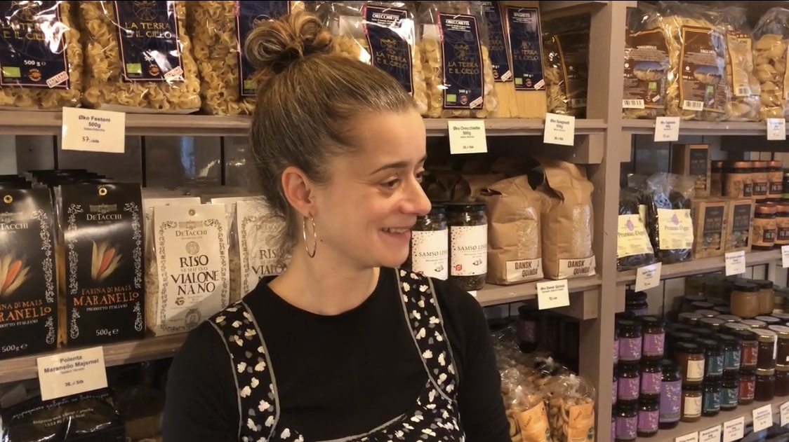
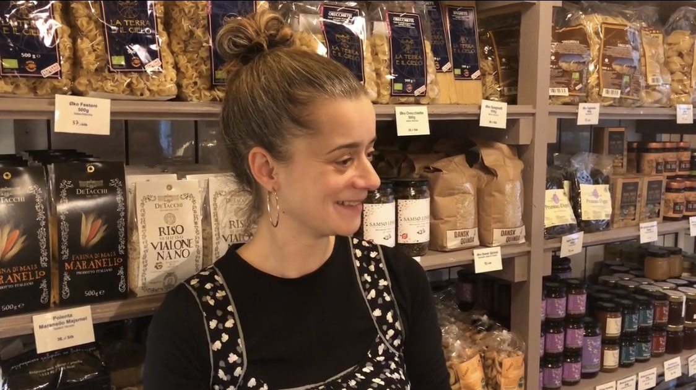

Billeder fra optagelsesdagen:
Vi førte interview onsdag den 24 November 2021. Vi havde formuleret nogle interview spørgsmål på forhånd, og havde lavet en forventningsafstemning omkring hvordan rollerne skulel fordeles. Da begge studerende havde lyst til at forsøge sig med lidt af det hele, aftalte vi, at vi ville splitte spørgsmålene op, således så begge parter kunne interviewe og filme.
Vi filmede på vores respektive telefoner og optog desuden også lyd med dem.
Vi gik først i gang med at interviewe. Derefter tog hver student rundt i butikken, for at filme b-rolls.
Vi delte alt materiale med hinanden.
 
